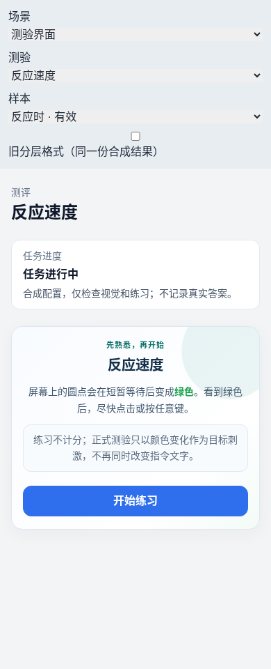
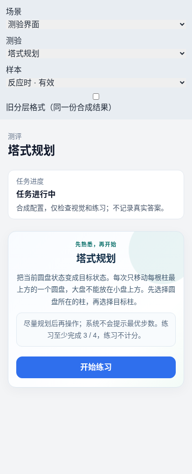

2026-10-01 · 合成样本与真实组件
认知测验 R1–R7
本地修复与验收
以下为推送前的本地验收快照：全部七项完成本地代码修复，当时未 push、未触发远端 CI、未部署。用户随后已授权推送与 CI，当前状态见工作约定。
修复内容
- 个体报告恢复匿名编号与完成时间，打印保留。
- 320px Matrix 修复格子重叠，原刺激尺寸不变。
- 后台记录采用稳定匿名报告标识，打印保留任务名与时间。
- 新增发布冻结策略只读盘点，区分当前、历史、缺失与综合流程。
- 个体报告恢复既有允许指标的折叠详细层，支持键盘和打印。
- 小字号强调文字对比度提升至 5.93:1。
- 24 类任务引导使用一致的视觉语言与中文阶段提示。
验证结果
后端 766、前端 306 测试通过；真实 PostgreSQL 报告集成 2 项通过。216 个报告组合、120 个任务布局检查及后台手机记录切换与打印检查通过。后端另有 29 项跳过，未计为通过。
部署覆盖尚未推断：本轮本地测试库只有 12 个发布配置、0 个发布任务。盘点正确返回 NO_PUBLISHED_ASSIGNMENTS；实际部署发布目录与浏览器验收留待发布阶段。
不同测验的共同视觉语言

反应速度
塔式规划